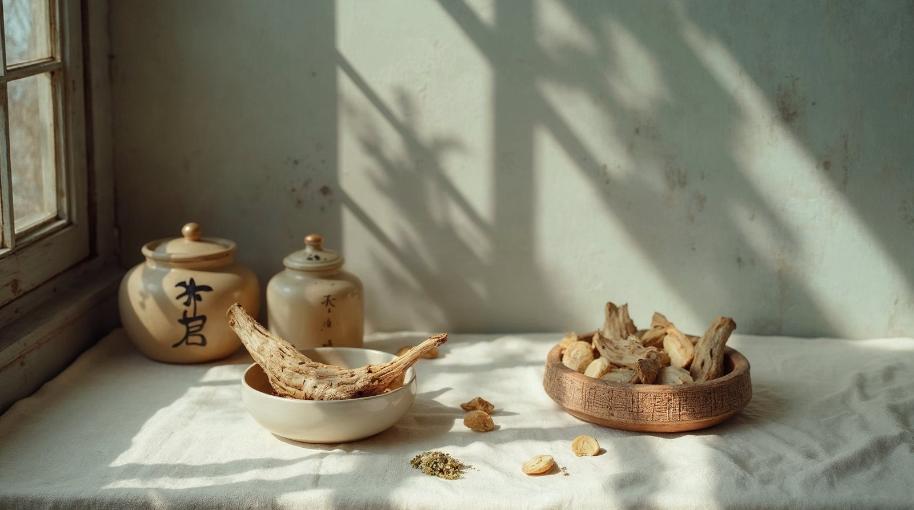
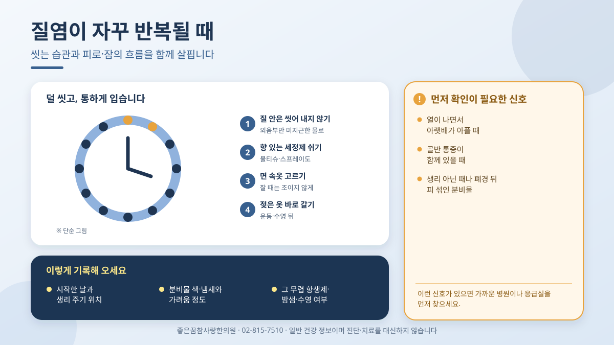

이종호 한의사 감수좋은꿈참사랑한의원 대표원장 (한의사 면허번호 19769)발행 2026-11-26 · 수정 2026-11-26
이 글의 차례
퇴근길 지하철에서 괜히 자리를 고쳐 앉게 됩니다. 아침부터 은근히 가렵고, 화장실에 갈 때마다 속옷에 묻은 냉이 평소와 조금 다른 것 같아 신경이 쓰입니다. 지난달에도 산부인과에서 질정을 받아 왔는데, 몇 주 지나지 않아 또 비슷한 느낌이 올라옵니다. "왜 나만 이렇게 자꾸 걸리지?" 하는 생각에 마음까지 지칩니다.
냉은 질과 자궁경부에서 나오는 정상 분비물이고, 생리 주기에 따라 양과 끈적임이 달라집니다. 그런데 냄새가 나고, 색이 누렇거나 회색으로 변하고, 가려움이나 따가움이 함께 온다면 질염일 수 있습니다. 질염은 원인에 따라 치료가 달라서, 증상이 있을 때는 산부인과에서 먼저 확인을 받는 것이 순서입니다.
한의원에서는 그 진단과 치료를 확인한 위에서, 왜 이렇게 자주 되풀이되는지를 몸 전체의 흐름에서 함께 살핍니다. 피로가 쌓이거나 잠이 모자란 달, 항생제를 먹은 뒤, 생리 전후처럼 반복되는 때가 있는지가 실마리가 되는 경우가 많습니다.
이 이야기는 꺼내기가 참 어렵습니다. 진료실에서도 다른 증상을 다 말씀하신 뒤 일어서기 직전에 "그리고 사실은…" 하고 조심스럽게 꺼내는 분이 많습니다. 부끄러운 일이 아닙니다. 많은 여성이 한 번쯤, 혹은 여러 번 겪는 일이니 편하게 말씀해 주세요.
왜 질염이 자꾸 반복될까요
건강한 질 안에는 유산균(락토바실루스)이 많이 살면서 약한 산성 환경을 지켜 줍니다. 이 산성 환경이 다른 균이 지나치게 늘어나는 것을 막는 울타리 역할을 합니다. 그런데 이 균형이 흔들리면 평소에는 조용하던 균이 늘어나면서 질염이 생기기 쉬워집니다.
균형을 흔드는 일은 생각보다 일상 가까이에 있습니다. 감기나 다른 병으로 항생제를 먹은 뒤, 생리 직후, 임신 중, 혈당이 높을 때, 피로와 스트레스가 겹친 달에 질염이 잘 생긴다고 알려져 있습니다. 질 안을 자주 세정제로 씻어 내는 습관도 오히려 이로운 균까지 씻어 내기 쉽습니다.
몸에 딱 붙는 옷과 통풍이 안 되는 속옷, 오래 앉아 있는 생활, 생리대를 오래 갈지 못하는 날도 습기를 가둡니다. 한 가지 이유라기보다 여러 조건이 겹쳐 반복되는 경우가 많아서, 저는 증상만이 아니라 그 무렵의 하루를 함께 여쭙습니다.
한의학에서는 대하(帶下)라 하여 분비물의 색과 양, 냄새를 오래전부터 살펴 왔습니다. 그리고 피로가 쌓이고 아랫배가 차거나, 반대로 열감과 가려움이 도드라지는 모습을 몸 전체의 상태와 이어서 봅니다. 그렇다고 이것이 원인균 검사를 대신하지는 않습니다.
정상 냉과 질염, 이렇게 나눠 봅니다
정확한 진단은 산부인과 검사로 하지만, 대략의 차이를 알아 두면 언제 진료가 필요한지 판단하는 데 도움이 됩니다.
정상적인 냉
맑거나 약간 하얀 색이고, 냄새가 거의 없거나 아주 약합니다. 배란 무렵에는 양이 늘고 달걀흰자처럼 맑고 잘 늘어나며, 생리 직전에는 조금 탁하고 끈적해질 수 있습니다. 가려움이나 따가움이 없다면 대개 주기에 따른 정상 변화입니다.
세균성 질증
회색빛이 도는 묽은 분비물이 늘고, 비린 냄새가 나는 것이 특징으로 알려져 있습니다. 냄새는 생리 뒤나 성관계 뒤에 더 도드라지기도 합니다. 가려움은 심하지 않은 경우가 많아서, 냄새 때문에 처음 알아채는 분이 많습니다.
칸디다 질염
흰 치즈나 으깬 두부처럼 덩어리진 분비물과 함께 가려움, 화끈거림이 심한 경우가 많습니다. 항생제를 먹은 뒤, 임신 중, 혈당이 높을 때 잘 생긴다고 알려져 있습니다. 외음부가 붉게 붓고 소변을 볼 때 따가울 수도 있습니다.
트리코모나스 질염
거품이 섞인 노르스름하거나 녹색빛 분비물과 냄새, 가려움이 나타날 수 있습니다. 성접촉으로 옮는 경우가 많아, 확인되면 파트너도 함께 진료를 받는 것이 권장됩니다.
이 밖에 폐경 뒤 호르몬이 줄면서 질이 건조하고 따가운 위축성 질염도 있습니다. 겉으로 비슷해 보여도 원인과 약이 다르니, 지난번 받은 질정을 이번에도 그대로 쓰기보다 다시 확인받으시길 권합니다.
방광염과 헷갈릴 때
질염과 방광염은 함께 오는 일이 많아, 진료실에서도 두 가지를 나란히 놓고 여쭙습니다.
질염과 방광염은 위치가 가까워 함께 오거나 헷갈리기 쉽습니다. 소변을 볼 때 끝에 찌릿하고, 자주 마렵고, 다 보고도 남은 느낌이 강하다면 방광염 쪽을 먼저 생각합니다. 분비물 변화와 외음부 가려움이 중심이라면 질염 쪽에 가깝습니다.
소변이 자주 마렵고 아랫배가 불편한 느낌이 반복된다면 소변이 자주 마렵고 아랫배가 불편한 느낌이 자꾸 반복될 때는 어떻게 하나요?도 함께 보세요. 두 가지가 함께 의심되면 산부인과나 비뇨의학과에서 소변 검사와 분비물 검사를 같이 받는 것이 정확합니다.
얼마나 자주 반복되면 더 살펴보나요
흔히 1년에 네 번 이상 질염이 생기면 '반복되는 질염'으로 보고 조금 더 자세히 살핍니다. 이때 산부인과에서는 분비물 배양 검사로 원인균을 정확히 확인하거나, 정해진 기간 동안 약을 이어서 쓰는 방법을 안내하기도 합니다.
반복될수록 원인을 다시 확인하는 일이 더 중요해집니다. 같은 질염이 되풀이되는 것인지, 매번 다른 원인인지에 따라 대처가 달라지기 때문입니다. 혈당이 높거나, 면역을 누르는 약을 드시거나, 호르몬 변화가 큰 시기라면 그 바탕도 함께 봐야 합니다.
저는 반복되는 질염을 '내 몸이 지금 조금 버거워하고 있다'는 신호로 함께 읽어 보자고 말씀드립니다. 증상이 올라온 달의 잠과 피로, 식사, 생리 리듬을 나란히 놓으면 생각보다 공통점이 잘 보입니다.
생리 주기와 함께 보면 보이는 것
냉은 생리 주기를 따라 모습이 바뀝니다. 생리가 끝난 직후에는 양이 적고, 배란 무렵에는 맑고 많아지며, 생리 전에는 다시 탁하고 끈적해집니다. 이 흐름을 알고 있으면 '평소와 다르다'는 느낌을 더 정확히 말할 수 있습니다.
그래서 저는 증상이 생긴 날이 주기의 어디쯤인지를 꼭 여쭙습니다. 생리 직후에 자주 시작된다면 생리대와 습기를, 생리 전에 반복된다면 피로와 잠, 호르몬 리듬을 조금 더 살펴보는 식으로 대화의 방향이 달라집니다.
스스로 점검해 보세요
해당하는 줄에 표시해 두셨다가 진료 때 보여 주시면 이야기를 시작하기가 한결 수월합니다.
- 분비물 색이 회색, 누런색, 녹색으로 바뀌었다
- 비린내나 평소와 다른 냄새가 난다
- 외음부가 가렵거나 화끈거리고 붉게 부었다
- 소변을 볼 때 따갑다
- 항생제를 먹은 뒤나 생리 직후에 자주 시작된다
- 1년에 서너 번 이상 질염 치료를 받았다
- 피곤하고 잠이 모자란 달에 더 잘 생기는 것 같다
마음이 먼저 지칠 때
질염이 되풀이되면 몸보다 마음이 먼저 지칩니다. 혹시 남에게 냄새가 나지 않을까 신경 쓰이고, 산부인과에 또 가야 한다는 생각에 진료를 미루게 되기도 합니다. 그렇게 미루는 사이 불편이 길어지는 경우가 많습니다.
저는 이 불편을 감기처럼 편하게 이야기할 수 있으면 좋겠다고 생각합니다. 흔한 일이고, 확인하고 돌보면 되는 일입니다. 혼자 참으며 검색만 하기보다 진료실에서 한 번 꺼내 놓으시면 그다음이 한결 가벼워집니다. 다음 진료 날짜를 미리 잡아 두는 것도 미루지 않게 돕는 작은 방법입니다.
먼저 이렇게 여쭙니다
민망하실 수 있는 질문이라 제가 먼저 차례대로 여쭙겠습니다. 대답하기 불편한 것은 건너뛰셔도 괜찮습니다.
- 산부인과에서 어떤 질염이라고 들으셨나요? 받은 약과 쓴 기간은 어떻게 되나요?
- 1년에 몇 번쯤 반복되나요? 주로 언제 시작되나요?
- 분비물의 색과 냄새, 가려움, 따가움은 어떤가요?
- 생리 주기와 생리대 종류, 갈아 주는 간격은 어떤가요?
- 최근 항생제를 드셨나요? 혈당 이야기를 들은 적이 있나요?
- 잠과 피로, 소화, 대변, 소변은 어떤가요?
- 질 세정제나 향이 있는 제품을 쓰시나요? 임신 가능성은 없나요?
일상에서 먼저 해 볼 수 있는 것
생활 습관만으로 질염을 막을 수 있다고 말씀드리기는 어렵습니다. 다만 균형을 흔드는 조건을 줄이는 일은 해 볼 수 있습니다. 한꺼번에 다 바꾸기보다 하나만 골라 보세요.
- 질 안을 세정제로 씻어 내지 않기, 외음부는 미지근한 물로 가볍게 씻기
- 향이 있는 세정제, 물티슈, 스프레이는 쉬어 가기
- 면 속옷을 고르고, 잠잘 때는 조이지 않는 옷 입기
- 운동이나 수영 뒤 젖은 옷은 바로 갈아입기
- 생리대와 팬티라이너는 자주 갈고, 라이너를 매일 쓰는 습관은 줄여 보기
- 화장실에서는 앞에서 뒤로 닦기
잠과 피로도 빼놓을 수 없습니다. 야근이 몰린 달, 시험 기간, 아이가 아파 밤을 새운 주에 질염이 다시 올라왔다는 말씀을 자주 듣습니다. 몸이 지친 시기를 미리 알면 그 무렵만이라도 잠을 조금 더 챙겨 볼 수 있습니다.
성관계 뒤에 자주 시작된다면 그 뒤에 소변을 보고 외음부를 가볍게 씻는 습관을 들여 보세요. 윤활제나 피임 도구에 따라 따가움이 생기는 분도 있어, 반복된다면 무엇을 썼는지 적어 두셨다가 산부인과에서 함께 상의해 보시길 권합니다.
단 음료와 간식이 많은 생활이라면 줄여 보는 것도 의미가 있습니다. 특히 칸디다 질염이 자주 반복된다면 혈당 검사를 받아 보시길 권합니다. 내과에서 간단히 확인할 수 있습니다.

한의원에서 함께 살필 수 있는 경우
- 산부인과 치료를 받은 뒤에도 비슷한 증상이 자주 되풀이되는 경우
- 피로하거나 잠이 모자란 시기마다 질염이 반복되는 것 같은 경우
- 아랫배가 차고 분비물이 묽게 많아지며 몸이 무거운 경우
- 생리 전후로 가려움과 분비물 변화가 반복되는 경우
좋은꿈참사랑한의원에 처음 오시면 산부인과에서 들은 진단과 받은 약부터 확인하고, 아래의 '먼저 확인이 필요한' 신호가 없는지 살핍니다. 그다음 맥을 짚으며 잠, 소화, 대변, 소변, 생리, 몸의 온도를 여쭙고 필요하다고 판단되면 혀도 봅니다.
이렇게 모은 이야기를 바탕으로 침, 한약 상담, 생활 관리 가운데 지금 몸에 맞는 방법을 함께 정합니다. 지금 질염 증상이 뚜렷하게 있다면 산부인과 치료를 먼저 받으시도록 안내하고, 한의원 진료는 그 치료와 겹치지 않게 일정을 맞춥니다.
한의원 진료가 산부인과 치료를 대신하지는 않습니다. 증상이 다시 생기면 그때마다 원인을 확인받으시고, 한의원에서는 그 사이에 몸의 컨디션과 생활 리듬을 함께 돌본다고 생각해 주세요.
다시 오시면 지난번 뒤로 증상이 다시 있었는지, 그 무렵 잠과 피로, 생리는 어땠는지부터 이어서 여쭙습니다.
이렇게 기록해 오시면 상담이 쉬워집니다
반복되는 증상은 기록이 있을 때 흐름이 보입니다. 두세 달만 적어 보세요.
- 증상이 시작된 날과 생리 주기에서의 위치
- 분비물 색과 냄새, 가려움 정도
- 그 무렵 항생제 복용, 야근이나 밤샘, 여행, 수영 여부
- 산부인과 진료 날짜와 들은 진단, 받은 약
- 잠든 시각과 깬 시각, 피로했던 날
적다 보면 "항생제를 먹고 나면 꼭 오네", "생리 끝나고 사흘째쯤이네"처럼 스스로 먼저 알아채시는 경우가 많습니다. 그 발견이 대화의 출발점이 됩니다. 적어 둔 메모는 산부인과 진료 때도 그대로 보여 주시면 원인을 찾는 데 쓸모가 있습니다.
치료를 이어 갈 때 기억해 주세요
산부인과에서 처방받은 약은 증상이 가라앉은 것 같아도 정해진 기간을 지켜 써 주세요. 중간에 멈추면 다시 올라오기 쉽습니다. 남은 질정을 다음에 비슷한 증상이 올 때 혼자 쓰는 것도 피하시는 편이 안전합니다.
여러 번 반복되면 '내 몸이 약한가' 하는 생각에 위축되기 쉽습니다. 그런 마음이 드는 것이 당연합니다. 원인을 하나씩 확인하고, 반복되는 때를 찾아 그 무렵을 조금 더 챙겨 보겠습니다. 다음에 오시면 마지막으로 증상이 있었던 때가 언제였는지부터 여쭙겠습니다.
이런 증상은 먼저 확인이 필요합니다
- 열이 나면서 아랫배나 골반이 아픈 경우
- 생리가 아닌 때나 폐경 뒤에 피가 섞인 분비물이 나오는 경우
이런 신호가 있으면 한의원보다 가까운 병원이나 응급실을 먼저 찾으세요.
함께 읽으면 좋은 글
- 소변이 자주 마렵고 아랫배가 불편한 느낌이 자꾸 반복될 때는 어떻게 하나요?
- 생리 때마다 아랫배가 차고 묵직할 때는 무엇을 먼저 살피나요?
- 갱년기 무렵 눈·입·피부가 부쩍 건조해졌을 때는 무엇을 살피나요?
- 일과 육아를 함께 하며 늘 지쳐 있을 때는 무엇부터 살피나요?

여쭙는 것
- 산부인과에서 어떤 질염이라고 들으셨나요? 받은 약과 쓴 기간은 어떻게 되나요?
- 1년에 몇 번쯤 반복되나요? 주로 언제 시작되나요?
- 분비물의 색과 냄새, 가려움, 따가움은 어떤가요?
생활에서 해 볼 것
- 질 안을 세정제로 씻어 내지 않기, 외음부는 미지근한 물로 가볍게 씻기
- 향이 있는 세정제, 물티슈, 스프레이는 쉬어 가기
- 면 속옷을 고르고, 잠잘 때는 조이지 않는 옷 입기
한의원에서 함께 살필 것
- 산부인과 치료를 받은 뒤에도 비슷한 증상이 자주 되풀이되는 경우
- 피로하거나 잠이 모자란 시기마다 질염이 반복되는 것 같은 경우
- 아랫배가 차고 분비물이 묽게 많아지며 몸이 무거운 경우
먼저 확인이 필요한 신호
- 열이 나면서 아랫배나 골반이 아픈 경우
- 생리가 아닌 때나 폐경 뒤에 피가 섞인 분비물이 나오는 경우
한눈에 보는 표
| 구분 | 핵심 |
|---|---|
| 여쭙는 것 | 산부인과에서 어떤 질염이라고 들으셨나요? 받은 약과 쓴 기간은 어떻게 되나요? 1년에 몇 번쯤 반복되나요? 주로 언제 시작되나요? |
| 생활에서 해 볼 것 | 질 안을 세정제로 씻어 내지 않기, 외음부는 미지근한 물로 가볍게 씻기 향이 있는 세정제, 물티슈, 스프레이는 쉬어 가기 |
| 한의원에서 함께 살필 것 | 산부인과 치료를 받은 뒤에도 비슷한 증상이 자주 되풀이되는 경우 피로하거나 잠이 모자란 시기마다 질염이 반복되는 것 같은 경우 |
| 먼저 확인이 필요한 신호 | 열이 나면서 아랫배나 골반이 아픈 경우 생리가 아닌 때나 폐경 뒤에 피가 섞인 분비물이 나오는 경우 |
자주 묻는 질문
냉이 많으면 다 질염인가요?
아닙니다. 냉은 생리 주기에 따라 양과 끈적임이 달라지는 정상 분비물입니다. 냄새가 나고 색이 바뀌거나, 가려움과 따가움이 함께 있을 때 질염을 의심하고 산부인과에서 확인합니다.
질염 때문에 한의원에 가도 되나요?
지금 증상이 있다면 산부인과에서 원인을 먼저 확인하시길 권합니다. 치료 뒤에도 자주 되풀이된다면 한의원에서 피로, 잠, 소화, 생리 리듬을 함께 살피며 침과 한약 상담, 생활 관리를 상의할 수 있습니다.
질 세정제로 자주 씻으면 예방이 되나요?
질 안을 씻어 내면 이로운 유산균까지 줄어 오히려 균형이 흔들리기 쉽다고 알려져 있습니다. 외음부만 미지근한 물로 가볍게 씻는 정도를 권합니다.
파트너도 치료를 받아야 하나요?
트리코모나스처럼 성접촉으로 옮는 질염은 파트너도 함께 진료받는 것이 권장됩니다. 어떤 경우에 해당하는지는 산부인과에서 안내를 받으세요.
임신 중에 질염이 생기면 어떻게 하나요?
임신 중에는 분비물 변화를 산부인과에 먼저 알리고 확인을 받으세요. 한의원 진료를 받고 계시다면 임신 사실과 주수를 먼저 알려 주시고, 침과 한약은 산부인과와 상의해 정합니다.
좋은꿈참사랑한의원은 재진 때 지난번 이야기부터 이어서 여쭙니다. 진료시간과 예약은 오시는 길에서 확인하세요.
어디서 상담받을 수 있나요?
좋은꿈참사랑한의원은 서울 동작구 만양로2길 2 신성빌딩 3층·5층(서울 동작구 상도동, 7호선 상도역 3번 출구 근처)에 있습니다. 한의사 3명(이종호 대표원장, 조영기 수석진료원장, 정원영 진료원장)이 진료합니다. 진료시간은 평일 09:30~20:00(점심 13:00~14:00), 토·일·공휴일 09:30~15:00이며, 방문 전 전화로 확인을 권합니다. 예약은 네이버 예약, 카카오톡 상담, 전화 02-815-7510로 받습니다.
이 글은 일반적인 건강 정보이며 개인의 진단이나 치료를 대신하지 않습니다. 증상이 있거나 복용 중인 약이 있다면 진료를 통해 확인하세요. 치료 효과는 개인마다 다를 수 있습니다.
작성 기준: 일반적으로 알려져 있는 건강 정보를 참고해 정리했습니다(대표원장 감수). 증상 기록은 1~2주 동안 하루 1회, 비슷한 시간에 적어 오시면 지난 상태와 비교하기 쉽습니다.